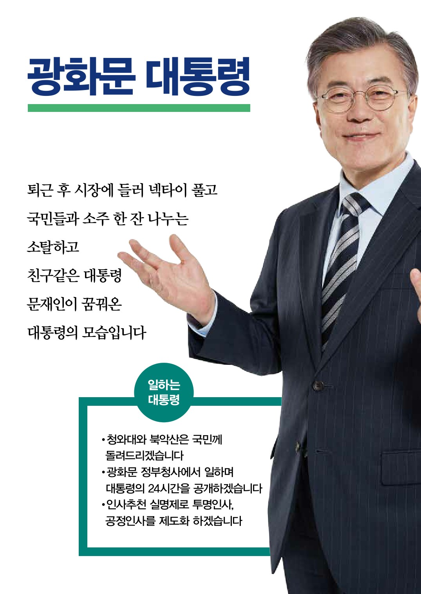
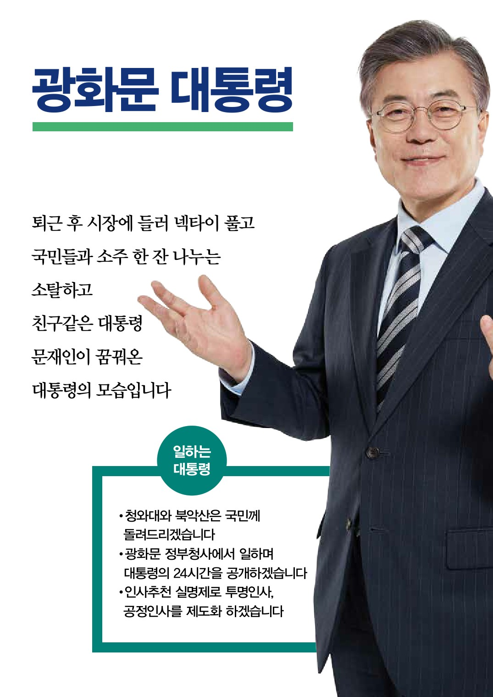
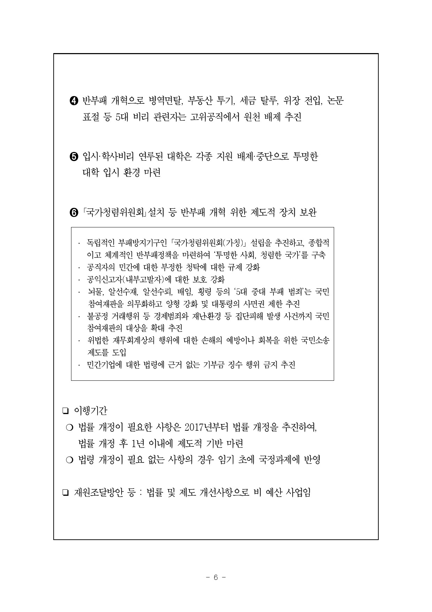
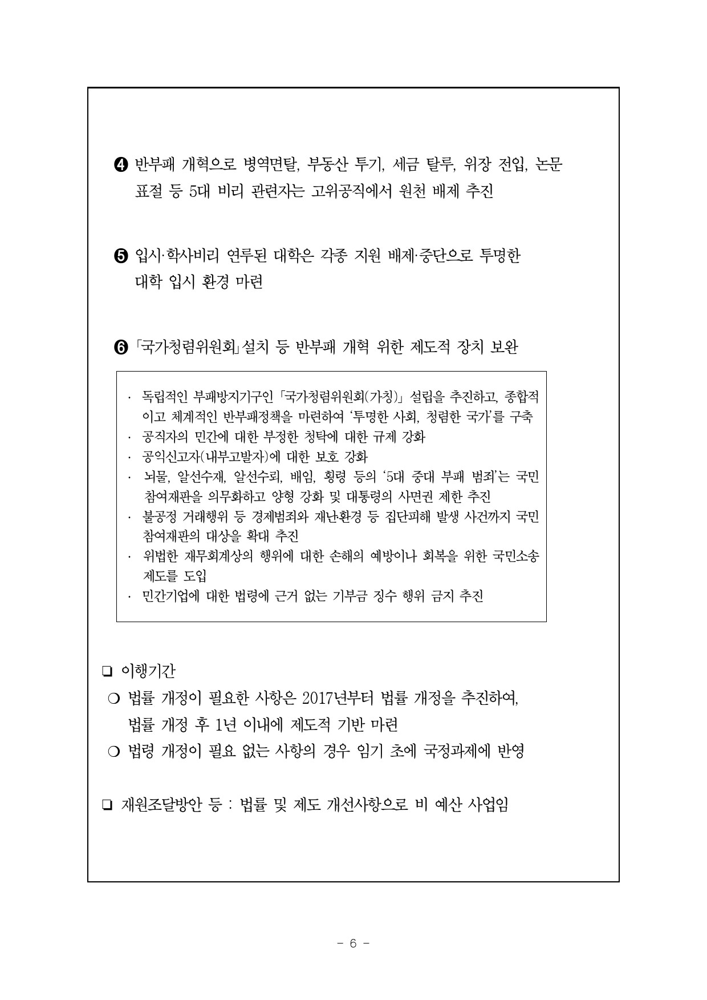

| 정당 | ● 더불어민주당 |
| 선거구 | 부산 사상구 |
| 당선횟수 | 1선 [ 19대 ] |
| 소속위원회 | 기획재정위원회 |
| 학력 | 경희대학교 법률학과 |
| 주요경력 | 제22회 사법시험 합격 법무법인부산 대표변호사 한겨레신문 창간위원 부산지방변호사회 인권위원장 민주사회를 위한 변호사모임 부산지부 대표 민주사회를 위한 변호사모임 경남지부 대표 대통령비서실 민정수석비서관 대통령비서실 시민사회수석비서관 대통령비서실 민정수석비서관 대통령비서실 실장 제2차 남북정상회담 추진위원회 위원장 사람사는세상 노무현재단 상임이사 사람사는세상 노무현재단 이사장 혁신과통합 상임대표 민주통합당 상임고문 더불어민주당 당대표 |
| 병역 | 본인 : 육군 병장 만기전역 아들 : 육군 병장 만기전역 |
| 전과 | 특수공무집행방해 집회 및 시위에 관한 법률위반 국회에서의 증언감정등에관한 법률위반 |
| 재산신고액 (천원) | 1,864,026 |
국회 본회의 출석률
19대
출처 : 열려라 국회
법안발의
출처 : 정부입법지원센터
| 의안명 | 소관부처 (발의일자) |
상임위원회 (입법구분) |
국회현황 (추진일자) |
의결현황 (의결일자) |
의안번호 (대안번호) |
|---|---|---|---|---|---|
| 공공기관의 사회적 가치 실현에 관한 기본법안 | 기획재정부 (2014. 6. 17.) |
기획재정 |
본회의 심의 의결 (2016. 5. 29.) |
임기만료 (2016. 5. 29.) |
1910886 |
| 부담금관리 기본법 일부개정법률안 | 기획재정부 (2012. 9. 7.) |
기획재정 |
본회의 심의 의결 (2016. 5. 29.) |
임기만료 (2016. 5. 29.) |
1901654 |
| 청년고용촉진 특별법 일부개정법률안 | 고용노동부 (2012. 9. 7.) |
환경노동 |
본회의 심의 의결 (2016. 5. 29.) |
임기만료 (2016. 5. 29.) |
1901649 |
| 최저임금법 일부개정법률안 | 고용노동부 (2012. 5. 30.) |
환경노동 |
본회의 심의 의결 (2016. 5. 29.) |
임기만료 (2016. 5. 29.) |
1900032 |


 



 
